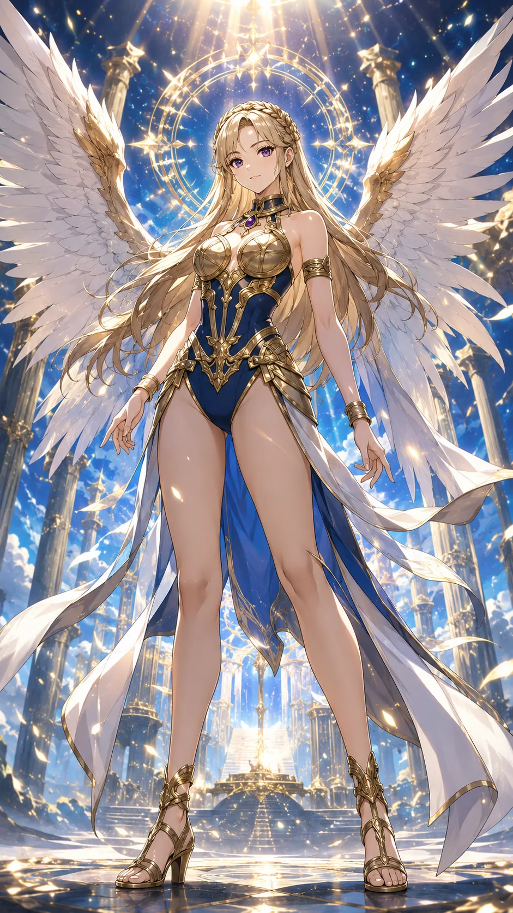

セレストリ
Celestree
『天空を翔ける、聖なる審美の裁き』
基本情報
- 年齢
- 20歳
- 体格
- 172cm・モデル体型（均整の取れた神聖比）
特性
セラフィックブレッシング 自身のオーラを神聖な光として放ち、その神々しさで相手の視線と意識を乱す特性。直視するだけでわずかに判断が鈍り、攻撃や踏み込みに迷いが生まれる。その間、セレストリ自身は迷いなく動き、神域のような空気の中で本来の力を発揮する。
超必殺技
アルティメット・セレストリア 天使の翼を大きく広げて空高く舞い上がり、全身をまばゆい光で包んだまま一気に急降下して叩き込む超必殺技。直撃の瞬間、聖なる光がリングいっぱいに広がり、その神々しさに観客さえ息を呑む。
性格
高潔で威厳を持つリーダー。高飛車で妥協を許さないが、仲間には女神のような包容力を見せる。内に秘めた“進化の使命”に自覚的で、リングを舞台に世界を導こうとするカリスマ
ファイトスタイル
空中コンボ・高速フェイントを用いた光の精密格闘。予知的な読みと舞うような動きで、相手の手数を無効化し、優雅に勝利を収める「裁きの舞」型
相性
- 有利な相手
- 闇・毒・呪術などネガティブ演出主体のファイター（例：シャドウヴァイパー）
- 不利な相手
- 戦略性・情報操作を武器とする知能型ファイター（例：ミステリアスシフター）
プロフィール
人工祝福体の原点──それが、セレストリである。アルカ・プロモーションズ社の「進化プロジェクト」に、自ら志願して参加した研究員。かつては自己評価が極端に低く、誰の目も見られなかった。しかし“美しさと力を得られるなら、何でもする”という覚悟のもと、あらゆる強化処置を受け、ついに最初の“天使型ファイター”として誕生する。 その姿はまさに“人工の奇跡”。舞い降りた銀翼、緻密に設計された筋肉構造、そして戦闘中すら崩れぬ完璧な笑顔。試合中にはかつて憧れた本物のフェアレディを模倣するようにふるまうが、その裏には「本物を超えてみせる」という静かな野心が潜んでいる。 彼女の超必殺技【アルティメット・セレストリア】が解き放たれる時、リングは“神の実験室”と化す。それは祝福ではなく、意志と代償で得た「自分だけの光」──セレストリは、誰よりも人工で、誰よりも誇り高い“フェアレディもどき”の頂点なのである。
口癖
「ひざまずきなさい。」